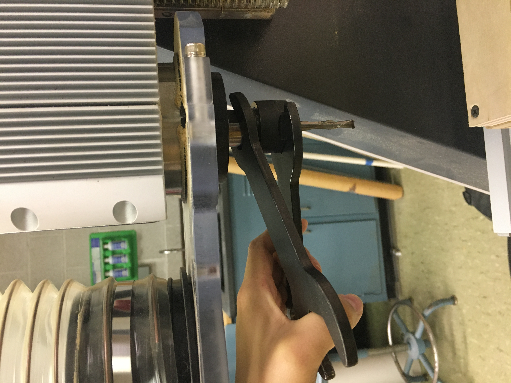
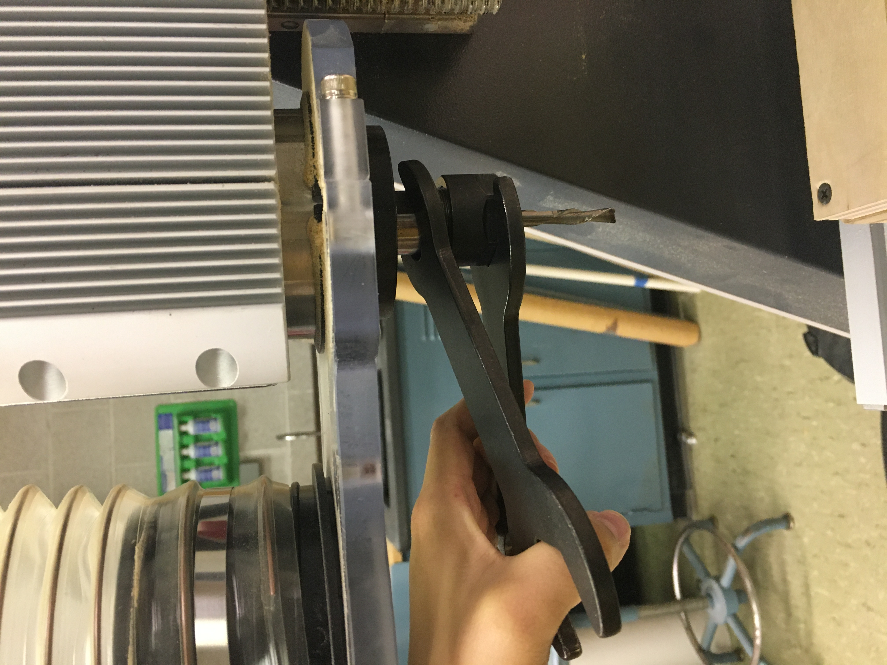
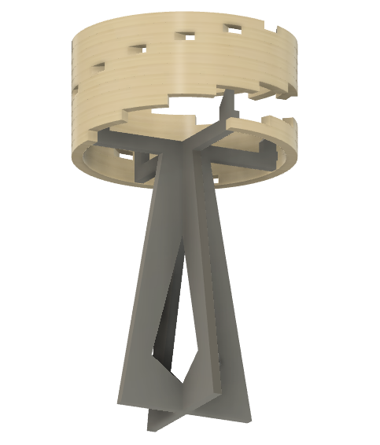

This week, I learned about subtractive manufacturing with the Axiom CNC router.
Contents
About CNC Routers
CNC routers use a subtractive process of manufacturing in which material is carved away to make a design. CNC stands for "computer numerically controlled", so the machine uses calculations and directions from a computer to tell it where to go and how to make its cuts.
The basic parts of the machine include the bed, the gantry, the spindle mount, and the controller. The bed is where you secure your material or stock.
The gantry is the arm on which the spindle moves vertically and in the X direction. The gantry itself moves along the Y axis. The spindle is the part of the machine that holds and rotates the bit to cut the material.
Depending on your job type, you will need to use a specific bit. To switch the bit, you must remove the collet and the collet nut from the spindle. These parts fit together to hold the bit in place.
Using the controller, you can manually change the position of the spindle, set the origin point for a cutting pass, and start or cancel a new job.
The Axiom also has a built in dust collection system. The black dust shoe directs loose particles up a tube, and that tube is connected to the dust collecter, placed next to the Axiom.
Using the Axiom
To prepare my test cut on the Axiom, I used a software called VCarve. In VCarve, I entered the dimmensions of my wood stock and set the Z Zero Position to the material surface.
Once I designed a simple test cut, I made tool paths for of each component. I set the cut depth for the profile cuts to be a little more than the thickness of my wood, so .78 inches. Also, I added tabs to keep the material secure.
From the tool library, I selected the 1/4" down-cut bit with these settings. After that, I saved each tool pass to a USB flashdrive.

At the Axiom, I secured some 3/4" plywood to the bed, using double-sided tape and screws. Then, I turned on the machine and returned all the axises to home (in the upper left-hand corner).
Next, I removed the collet and nut from the spindle, and reassembled it with a 1/4" down-cut bit.
 

I manually set the X and Y origin points to a corner of my wood stock. Then, with the metal touch-off sensor, I reset the Z axis origin to the surface of the bed.
Before staring my job, I turned on the dust collecter and mounted the dust shoe. Then, I used the controller to select my first tool path from the flashdrive. To start, I pressed "OK" twice. A message popped up on the controller that there was an issue with X+. I figured that this meant that there was not enough room in the X+ direction to make my cut, so I moved the spindle away from the edge of the bed, and reset the X origin. When that cutting pass was done, I ran the others.
When that cutting pass was done, I ran the others.
CNC Project
My CNC project began as the world's heaviest set of windchimes. What I mean is when I was starting out, I took inspiration from a lot of hanging wooden decorations. What I liked about these objects were their spirals.
After sketching out a design for windchimes in Fusion, I realized that my project wouldn't come anywhere close to using up a 2'x4' sheet of plywood. Also, I figured that my design would have turned out really heavy, if I made it out of plywood. So, I went back to the drawing board to look for a way to put my design to use on a larger scale!
I decided to rework my design to make it into a standing lamp. The image below is an early sketch of how I imagined the lamp parts would fit together. As a note, the lamp shade shown here is just a place holder for a different design made with the CNC machine. The base is made up of two trapazoidal shapes that fit together. The base connects to the lamp shade via 4 antler-like arms that stick out of the top of the trapazoids and get screwed into the wooden lamp shade from the inside.
The lamp shade part is made up of a series of partial rings that will be layered and glued on top of eachother, at an offset, to create a spiral pattern.
The base is made up of two parts that slide together. The small squares, sticking out of the arms, are meant to help support the lamp shade. They would fit into notches that would be cut into the appropriate places in the lamp shade.
Here is a full rendering of what the lamp would look like. Ideally, it would be about 30 inches tall and 18 inches wide, for the diameter of the lamp shade. So, it would sit on a table.

I transfered my designs into a vector file in Illustrator to show how the peices would be cut.
To assemble this project I would need some extra materials such as wood glue, and wood finish, and some screws. Also, I would need to purchase a light bulb, preferably a battery opperated one.